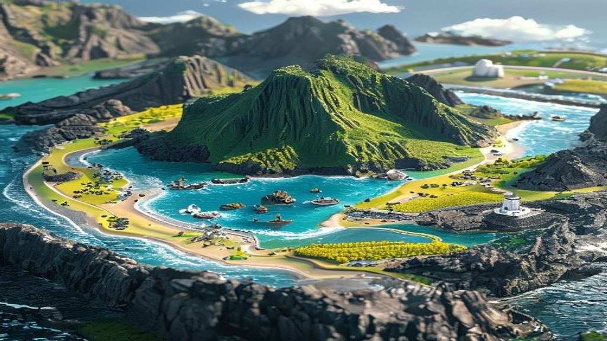
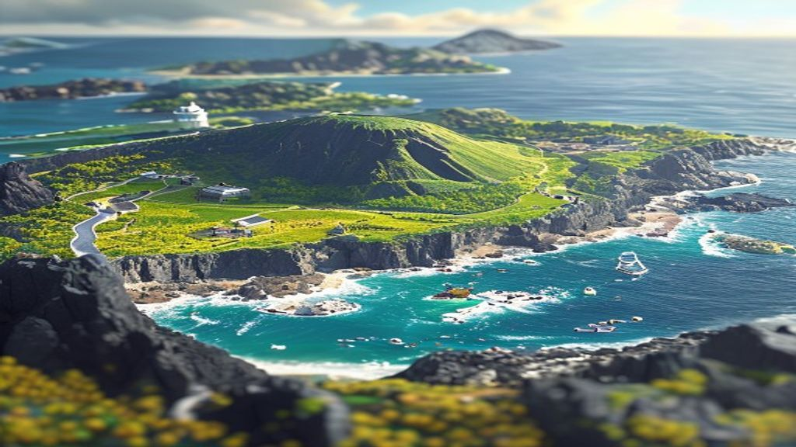
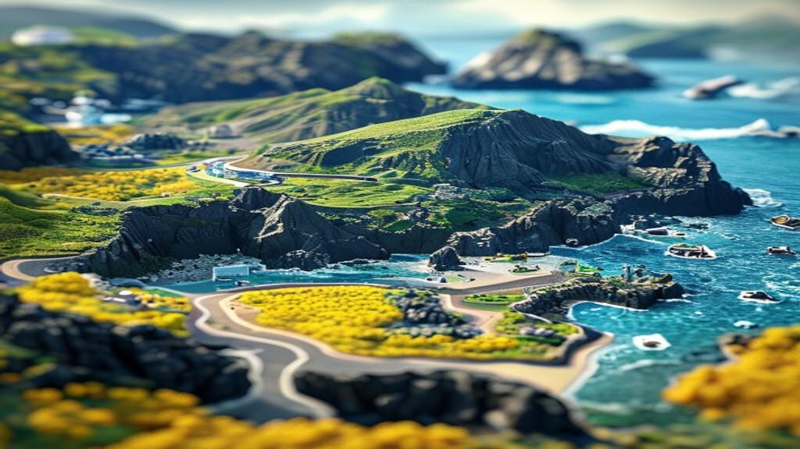

2번을 골라주셔서, 한라산 + 바다·파도 + 검은 현무암 해안 + 유채꽃 + 등대·항구 + 우도 같은 섬까지 넣어 다시 만들었습니다.
"1번 확정" 처럼 알려주시면 그걸로 인트로를 만들겠습니다.



이미지: Pollinations.ai (무료 생성) · 다음 단계 = 고른 이미지를 인트로로 → 바다에서 솟아오르는 연출.
※ 360도 회전(뒷면까지)은 정지 그림으론 불가 → AI 영상/3D 변환이 필요 (별도 시도).